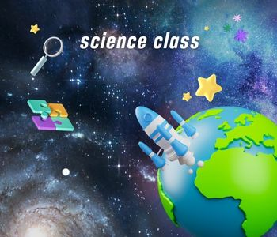

วิชาวิทยาศาสตร์ (Science)

[2] วิชาวิทยาศาสตร์ระดับมัธยมปลายสำหรับนักเรียนสายศิลป์ เน้นเรียนกลุ่ม "วิทยาศาสตร์พื้นฐาน" และ "วิทยาศาสตร์กายภาพ" ซึ่งย่อส่วนและปรับเนื้อหาให้เข้าใจง่าย ไม่ลงลึกเท่าสายวิทย์-คณิต 1. วิทยาศาสตร์ชีวภาพ (Biological Science)วิชานี้เน้นทำความเข้าใจเกี่ยวกับสิ่งมีชีวิต กลไกของร่างกายมนุษย์ และความสัมพันธ์ของสิ่งแวดล้อม เนื้อหาค่อนข้างใกล้ตัวและเน้นการจำ-ความเข้าใจเป็นหลัก สิ่งมีชีวิตกับสิ่งแวดล้อม:เรียนรู้เรื่องระบบนิเวศ (Ecosystem) การหมุนเวียนสาร ไบโอมแบบต่างๆ ทั่วโลก และปัญหา สิ่งแวดล้อม เช่น ภาวะโลกร้อน (Global Warming) และการจัดการทรัพยากรธรรมชาติ การรักษาดุลยภาพของร่างกายมนุษย์:เจาะลึกกลไกภายในร่างกาย ได้แก่ การควบคุมน้ำและสารในร่างกาย (ไต), การควบคุมความเป็นกรด-เบสในเลือด, การควบคุมอุณหภูมิ และระบบภูมิคุ้มกัน (Immune System) รวมถึงโรคที่เกิดจากภูมิคุ้มกันบกพร่อง พันธุกรรมและวิวัฒนาการ:โครงสร้างของ DNA, การถ่ายทอดลักษณะทางพันธุกรรม (ตามหลักเมนเดล), โรคทางพันธุกรรม, การผ่าเหล่า (Mutation) และการนำเทคโนโลยีทาง DNA มาใช้ในปัจจุบัน เช่น พืช GMOs หรือนิติวิทยาศาสตร์ ความหลากหลายของสิ่งมีชีวิต:เกณฑ์การจำแนกสิ่งมีชีวิตกลุ่มต่างๆ และความสำคัญของความหลากหลายทางชีวภาพ 2. วิทยาศาสตร์กายภาพ (Physical Science)วิชานี้จะรวบรวมเนื้อหาพื้นฐานของ เคมี และ ฟิสิกส์ เข้าไว้ด้วยกัน โดยตัดส่วนการคำนวณที่ซับซ้อนออกไป แล้วเน้นที่คอนเซปต์และปฏิกิริยาที่เราพบเจอได้ทั่วไป ส่วนที่ 1: เคมีประยุกต์ (Chemistry) อากาศและสารรอบตัว:โครงสร้างอะตอมเบื้องต้น ตารางธาตุ พันธะเคมี และแก๊สต่างๆ ในชั้นบรรยากาศ น้ำและสารละลาย:คุณสมบัติของน้ำ แรงยึดเหนี่ยวระหว่างโมเลกุล สารละลายกรด-เบสที่เรากินหรือใช้ในบ้าน ส่วนที่ 2: ฟิสิกส์ประยุกต์ (Physics) การเคลื่อนที่และแรง:เรียนรู้เรื่องระยะทาง ความเร็ว ความเร่ง แรงในธรรมชาติ (แรงโน้มถ่วง แรงแม่เหล็กไฟฟ้า แรงนิวเคลียร์) และกฎการเคลื่อนที่เบื้องต้น พลังงาน:รูปแบบของพลังงาน (พลังงานกล พลังงานความร้อน พลังงานนิวเคลียร์) การเปลี่ยนรูปพลังงาน และกฎการอนุรักษ์พลังงาน คลื่น แสง และเสียง:คุณสมบัติของคลื่น สเปกตรัมคลื่นแม่เหล็กไฟฟ้า (เช่น รังสี UV, ไมโครเวฟ, รังสีเอกซ์), การมองเห็น แสงสี และมลพิษทางเสียง 3. โลก ดาราศาสตร์ และอวกาศ (Earth and Space Science) วิชานี้จะชวนมองภาพใหญ่ตั้งแต่ใต้พื้นผิวโลกไปจนถึงสุดขอบจักรวาล เน้นความเข้าใจเรื่องภัยพิบัติทางธรรมชาติและการสำรวจอวกาศ โครงสร้างและการเปลี่ยนแปลงของโลก:ชั้นต่างๆ ของโลก (เปลือกโลก เนื้อโลก แก่นโลก) ทฤษฎีทวีปเลื่อน แผ่นเปลือกโลกเคลื่อนที่ และกระบวนการเกิดหิน แร่ ธรณีพิบัติภัย:เจาะลึกสาเหตุ การเฝ้าระวัง และการเอาตัวรอดจาก แผ่นดินไหว, สึนามิ, และภูเขาไฟระเบิด การเปลี่ยนแปลงภูมิอากาศ:ชั้นบรรยากาศ โครงสร้างและการหมุนเวียนของระบบลม ลมฟ้าอากาศ พายุ และกระแสน้ำในมหาสมุทร ดาราศาสตร์และเทคโนโลยีอวกาศ:กำเนิดและวิวัฒนาการของเอกภพ (ทฤษฎี Big Bang) กาแล็กซี ทางช้างเผือก วัฏจักรชีวิตของดาวฤกษ์ ระบบสุริยะ และการประยุกต์ใช้เทคโนโลยีอวกาศ เช่น ดาวเทียมสื่อสาร, กล้องโทรทรรศน์อวกาศ, และยานสำรวจ